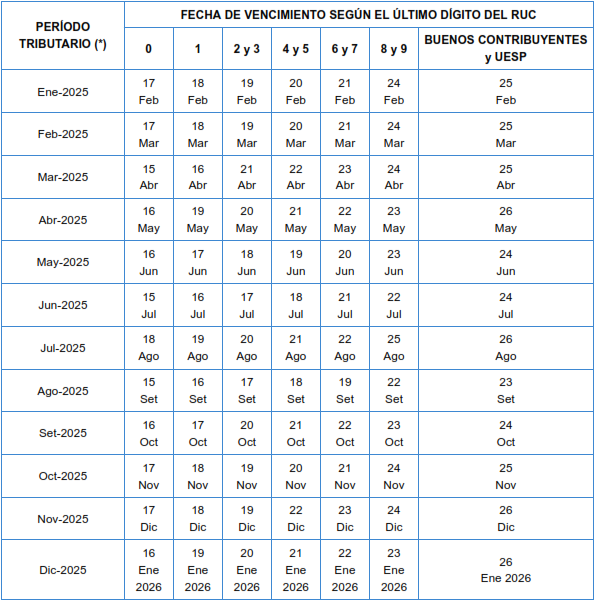

Aplica desde el 01 de enero del 2025 al 31 de diciembre del 2025
Define las fechas máximas de pago de tributos mensuales.
Las fechas de vencimiento es de acuerdo a la último dígito de RUC.

Fecha de creación: 2024-01-19
Fecha de modificación: 2024-01-19
Etiquetas : tributación